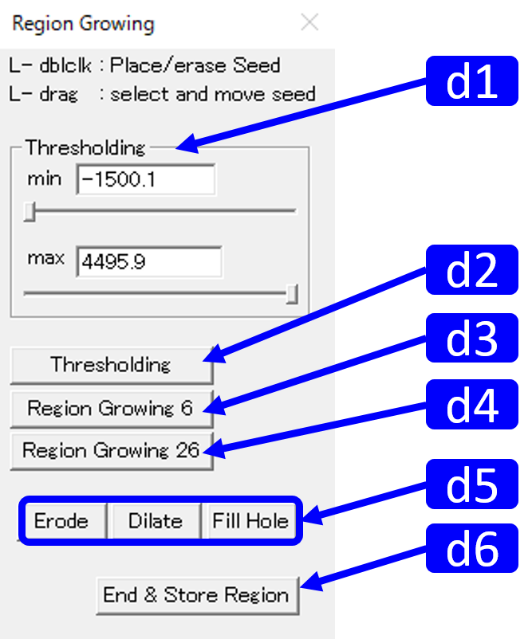

Region Growing Segmentation

RoiPainter I/O Visualization Segmentation source code (github)
1) Region Growing
概要
Workflow
- ツールの起動 : Click "Menu > ModeSwitch > Segmentation Region Grow"
- :
- 領域分割 : Region Growingにより領域分割を行う．
- >終了 : ダイアログ右下のEnd & Store Regionを押す．
|
操作 動作 L-drag 移動 R-drag 回転 M-wheel スライス移動 M-drag 拡大縮小 |
|  |
d1. 名称 役割 d2. d3. d4. d5. d6. End & Store Region 作業終了，Vizualization maskへ移動 説明 |